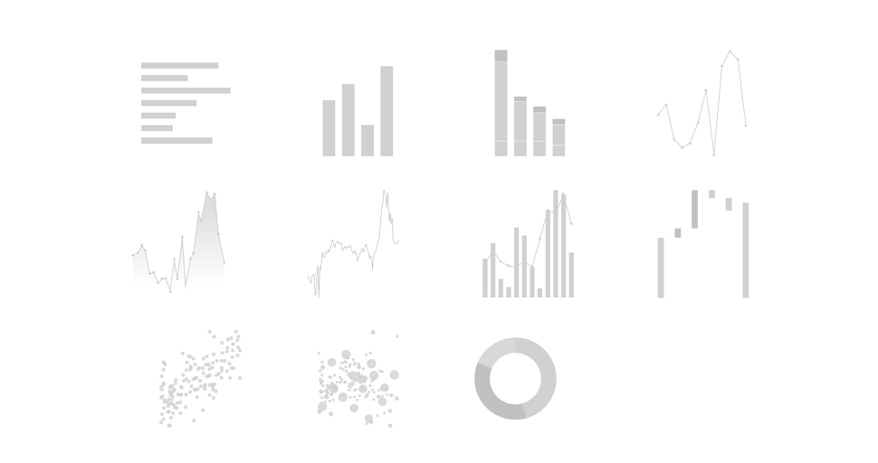

<div class="chart-container">   
<div *ngIf="showChart" class="chart-element" #chartEl></div>
<div *ngIf="!showChart"  class="col-12 p-0 chart-nodata">
    <p class="text-center centered">No data available. You may choose a different time period and check</p>
    
  </div>
<!-- <div #legend class="row m-0 col-12 pr-0 custom-leg-others" style="text-align: left;justify-content: center;max-height: 32px;line-height: 16px;overflow: hidden;margin-top: -8px !important;height: 32px;align-items: center;"></div> -->
</div> 

<app-context-menu *ngIf="showContextMenu" [chartData]="chartData" 
[drilldownActions]="chartData?.drilldownActions"
(contextMenuEmit)="ContextMenuEmitter($event)"></app-context-menu>
